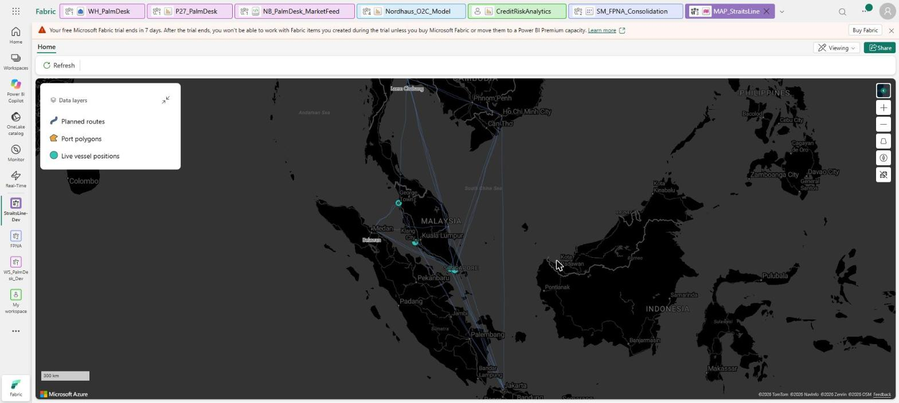
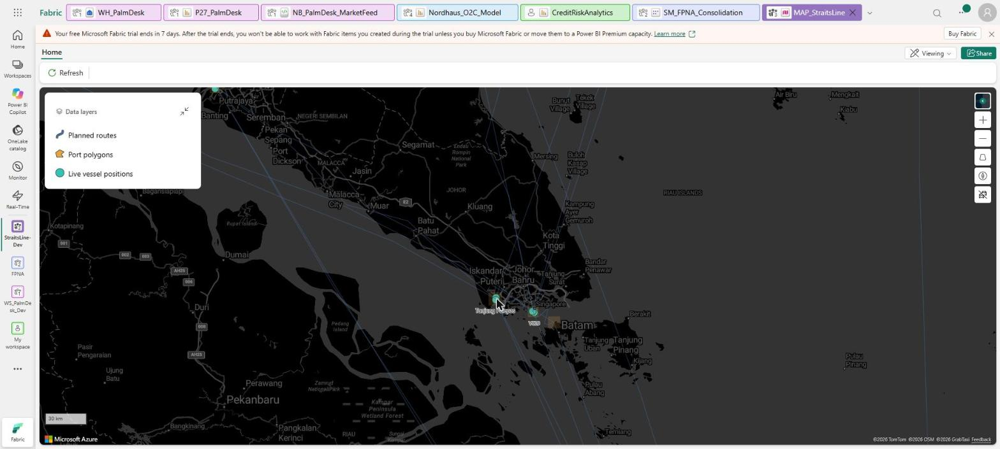
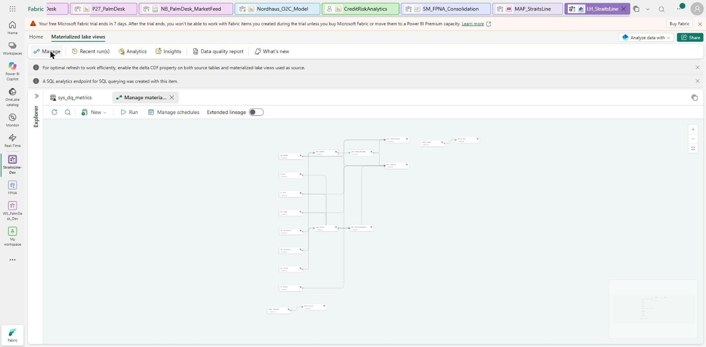

Build ocean freight operations on Microsoft Fabric
Simulated ship positions stream into an Eventhouse, a KQL geofence turns them into port calls, a Fabric Map shows the fleet live, and Materialized Lake Views build demurrage and voyage economics for a Direct Lake report. Nine steps, roughly 12 hours, every figure checked against a value computed somewhere else.
Why anyone builds this
A feeder line runs on a few questions asked every day: where are the ships, which port is slow, which boxes have stayed past their free days, and is each voyage paying for itself? The answers usually come from a vessel tracking screen, a terminal report and a spreadsheet, each on its own clock.
This build puts them on one estate. Port calls come from the ship's own position, not from someone keying in an arrival time, and the money follows from the same events.
What you are building
| Layer | What it is |
|---|---|
| Generator | One seeded Python file: 12 vessels, 10 ports, 60 voyages over 60 days, 146,205 rows in all |
| Eventstream → Eventhouse | 131,544 AIS pings replayed through a custom endpoint |
| KQL geofence | Pings into arrivals and departures; 300 of 300 port calls matched |
| Fabric Map | Vessels, port polygons and routes as live KQL layers |
| Materialized Lake Views | 4 Silver and 4 Gold views with data-quality rules; 43 of 43 checks pass |
| Direct Lake model and report | 25 measures, 4 pages, 45 visuals |
| Ontology | Bound over Gold; its graph did not materialize (step 8) |
Get the code
Everything the steps below tell you to run is in one public repository, MIT licensed, no sign-up. Get it before step 1: the Variable Library is the first thing you deploy.
git clone https://github.com/BIVenture2025/straitsline-ocean-freight-fabric.git cd straitsline-ocean-freight-fabric python3 generator/straitsline_gen.py --out ./out
| Folder | What is in it |
|---|---|
generator/ | The seeded data generator. Every tunable number comes from the Variable Library |
notebooks/ | Generate, Replay and MLV notebooks, the scripts that build them, and offline test harnesses |
platform/ | Variable Library, Eventstream, KQL geofence and its checks, KQL database schema, Map, MLV SQL, Ontology |
model/ | The Direct Lake semantic model as TMDL |
report/ | The four-page PBIR report and the script that generates it |
docs/ | Contract, specs, control totals, closure documents, and this guide |
platform/KQL_StraitsLine/geofence.kql is how pings become port calls, platform/MLV_StraitsLine/mlv.sql is the demurrage and margin logic, and docs/CONTROL_TOTALS.md is what every check is measured against.The build
Set up the workspace, the Variable Library and Git
Everything lives in one Fabric workspace on a capacity. Three things go in before any data: the Variable Library, the Git connection and the Lakehouse.
- Sign in at app.fabric.microsoft.com with a work or school account and create a workspace on your capacity.
- Deploy
platform/VL_StraitsLine.VariableLibraryfirst. Every tunable number the generator uses (fleet size, window, congestion strength, demurrage tariff, free days) is read from it, never from a literal in code. - Connect the workspace to Git (Workspace settings → Git integration).
- Create a Lakehouse called
LH_StraitsLinewith schemas enabled.
A schema-enabled Lakehouse is not the default, and the model in step 7 assumes it
ops, ref, stream, silver and gold schemas. Earlier builds had only proven Direct Lake against dbo. This one proved it against a schema-enabled Lakehouse with a two-table probe before the rest of the model was written (docs/MODEL_SPEC.md).Generate the data and freeze the control totals
A container feeder line on a 60-day window: 12 vessels, 10 ports, 60 voyages, about 4,000 bookings and 9,000 containers, plus the AIS pings the ships would have sent. The generator is one seeded Python file with no wall-clock read anywhere.
python3 generator/straitsline_gen.py --out ./out # writes the CSVs and _run_manifest.json with the SHA256 of every file
- Upload
generator/straitsline_gen.pyto the Lakehouse atFiles/generator/. - Build the Generate notebook with
notebooks/build_nb_generate.py, deploy it, and run it. It checks the uploaded file's SHA256 before importing it. - Check every row count against docs/CONTROL_TOTALS.md: 146,205 rows in total.
Large notebook definitions corrupt in transit; small ones do not
Create the Eventhouse and the geofence
The Eventhouse holds the live pings. A KQL geofence turns those pings into port calls: when a ship's position enters a port polygon, that is an arrival; when it leaves, a departure. Nobody keys in an arrival time.
- Create the Eventhouse
EH_StraitsLine. Its KQL database schema is inplatform/EH_StraitsLine.KQLDatabase/. - Regenerate the polygons from your generator output with
platform/KQL_StraitsLine/build_kql.py, then runplatform/KQL_StraitsLine/geofence.kqlin the database. - Optional, and worth it:
platform/KQL_StraitsLine/verify_geofence_offline.pyruns the same rule in plain Python. It scored 300 of 300 port calls before anything touched the tenant.
An update policy that joins a second table is refused with no reason
BadRequest through every syntax tried. The cause: an Eventhouse turns on streaming ingestion for every table by default, and a policy that joins needs it off on the source table. Run .alter table ais_ping_raw policy streamingingestion disable, and the original policy is accepted. A 30-second ingestion batching window keeps it close to live.How that one was found
Three retries that each changed one thing learned nothing. What worked was taking the refused command apart one property at a time, with a version known to be accepted as the control. The policy over the source alone was accepted; every variant that read the port table was refused. Microsoft's update-policy page names the streaming-ingestion rule once you know to look for it.
Wire the Eventstream and replay the pings
An Eventstream takes events from a custom endpoint and lands them in the Eventhouse. The Replay notebook sends the generator's pings through it, in time order.
- Deploy
platform/ES_StraitsLine.Eventstream(custom endpoint → Eventhouse). - Build the Replay notebook with
notebooks/build_nb_replay.pyand run it, passing the endpoint's connection string as a job parameter. The Eventstream API returns that string, so no one has to paste it. Never print it. - Score the result with
platform/KQL_StraitsLine/reconcile_geofence_tenant.py.
A notebook parameter in the wrong shape is accepted and ignored
executionData.parameters as {name: {value, type}}, not as a top-level list. Found with a two-cell probe notebook carrying no secret: it just returned the value it received.%pip install wipes the parameters, and API runs skip it anyway
_inlineInstallationEnabled. Put the install cell first and pass the flag.Draw the Fabric Map
The Fabric Map is the hero view: vessels, port polygons and routes, all three as live KQL layers over the same Eventhouse. The polygons the map draws are the same table the geofence tests against, so the picture cannot disagree with the port calls.
python3 platform/build_map.py # emits the MAP_StraitsLine definition


The schema text and the example disagree on a casing, and only the render settles it
itemType: "KqlDatabase", as the documented example writes it, binds and renders. The service echoes whatever you send on read-back, so a read-back proves nothing here. Open the map and look.Build Silver and Gold as Materialized Lake Views
Materialized Lake Views are SQL views that Fabric stores and keeps refreshed, with data-quality rules attached. Eight of them: four Silver (clean pings, port events, port calls, containers) and four Gold (port performance, container demurrage, voyage contribution margin, customer exposure).
- Build the notebook with
notebooks/build_nb_mlv.py; the SQL isplatform/MLV_StraitsLine/mlv.sql. - Import it into the workspace (Notebook → Import) and run it. It writes every graded assertion to a table, so the result can be read without the notebook UI.

DISTINCT, row_number() and AVG quietly turn off incremental refresh
GROUP BY and MIN/COUNT; keep averages and ratios in the semantic model.An answer key that rounds a number it grades exactly fails a correct build
Deploy the Direct Lake model and build the report
The semantic model reads the Gold views in place through Direct Lake: no import, no refresh schedule. Seven Direct Lake tables, one calculated date table and 25 measures. The report is four pages and 45 visuals, generated from code.
- Deploy
model/SM_StraitsLine.SemanticModel, replacing the placeholders listed in the README with your own values. - Build the report with
report/build_report.pyand openreport/P30_StraitsLine.pbipin Power BI Desktop. - Check the figures against docs/MODEL_SPEC.md before you trust a picture: 9 of 9 tied figures matched exactly in this build.


A title with a selector on it is ignored, and the validator is happy
selector: {"id": "default"} from the title and subtitle fixed all of them. Only a screenshot found it.Three more things only a screenshot shows
$23M unless you set the display units. A horizontal bar chart scrolls when it is too short for its categories, so a column chart of the same data fitted better. A table hid its last row behind its own totals row.Bind the ontology (optional)
A Fabric ontology describes the business objects (vessel, port, voyage, customer, booking, container, port call) and how they relate, bound to the Gold tables.
python3 platform/build_ontology.py ./ont_out
A definition that deploys and reads back does not prove the feature works
A portal reading you did not capture is a claim, not a result
Deploy from Git into an empty workspace
The last test of any estate: can it be rebuilt from the repository alone? Here it can. Deployed from scratch into an empty workspace, all 11 of 11 item folders published, the KQL database came up with its tables, functions and update policy, and the Map and Eventstream pointed at the new database, not the original one.
The first attempt reached only 8 of 10. The fix is in the two traps below.
Fabric Git keeps the KQL database inside the Eventhouse folder, in a hidden .children folder
EH_StraitsLine.Eventhouse/.children/EH_StraitsLine.KQLDatabase/, with its own logical id and a DatabaseSchema.kql holding the tables, functions and policies. A plain directory listing hides a dot-folder, which is how this build first recorded it as missing.A deploy scope built from top-level folders leaves the database out
KQLDatabase was missing, the database was never created, and the Eventstream and Map failed on it. Include KQLDatabase in the scope (or scan .children folders) and the deploy completes.platform/EH_StraitsLine.KQLDatabase/. Deploying from scratch copies definitions only: no data, and nothing runs until you run the notebooks.Every trap, in one table
| Trap | What happens |
|---|---|
| Join in an update policy, streaming ingestion on | Bare BadRequest. Turn streaming ingestion off on the source table. |
| Notebook parameters as a top-level list | Accepted and ignored. Use executionData.parameters. |
| %pip install after the parameters cell | Restarts Python and loses them. Install first and pass _inlineInstallationEnabled. |
| Big notebook definition in one payload | Refused as corrupted. Ship logic as a OneLake file and keep the notebook thin. |
| Map itemType casing | Read-back echoes what you sent. Only the render proves the binding. |
| DISTINCT, row_number() or AVG in an MLV | Silent fall back to full refresh. GROUP BY with MIN/COUNT. |
| Expected value copied at display precision | A correct build fails. Paste query output. |
| Title or subtitle with a selector | Ignored by Desktop, accepted by the validator. |
| Card display units, short bar charts, table totals | Only visible in a screenshot. |
| Ontology deployed and read back | Proves the definition, not the graph. Test for a returned row. |
| Uncaptured portal reading | Did not reproduce. Capture any reading that decides a step. |
| KQL database in Git | Lives under the Eventhouse in a hidden .children folder. List with dot-folders shown. |
| Deploy scope from top-level folders | Misses the KQL database. Put KQLDatabase in scope. |
What this build does not do
Stated plainly, because a portfolio piece that hides its gaps is worth less than one that names them.
- No GQL multi-hop. The ontology's graph never materialized; 0 of 5 impact questions ran on it. All five are answered in SQL and cross-checked.
- Contribution margin, not P&L. No bunker, port dues or terminal handling source.
- Demurrage only. Detention needs an empty-return time the data does not have.
- Congestion shows; a simple ranking does not identify it. The injected congestion is visible in the mean and the tail, but ranking ports by one statistic picks the wrong one (docs/MODEL_SPEC.md, section 7).
- No row-level security, no CI/CD pipeline. Out of scope.